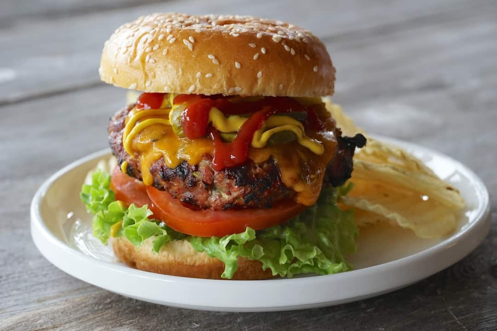

Mikes Savory Burgers

Description
This recipe produces a juicy and, in my opinion, healthier cheeseburger perfect for college football nights!
Ingredients
- 1.5 pounds 92% lean ground beef
- 4 tablespoons Dijon mustard
- Salt and ground black pepper, to taste
- 1/2 cup low-carb ketchup
- 1/2 cup light mayonnaise
- 1 tablespoon red wine vinegar
- 2 teaspoons Worcestershire sauce
- 4 whole-grain hamburger buns
- 4 sandwich slice pickles, halved
Steps
- Prepare a grill to high heat. Lightly coat the grill grates with cooking spray.
- In a large bowl, combine beef, mustard, salt, and pepper. Shape into 4 equal-sized patties and grill the patties for 5 to 6 minutes per side.
- Meanwhile, in a small bowl, mix ketchup, mayonnaise, vinegar, and Worcestershire sauce.
- Slice the buns in half and place cut side down on the grill to toast until light golden brown, about 10 seconds.
- Place hamburgers onto buns and top with pickles and sauce. Serve.